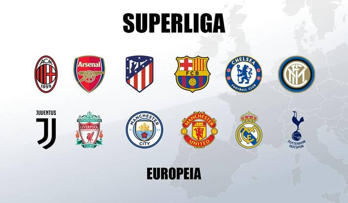
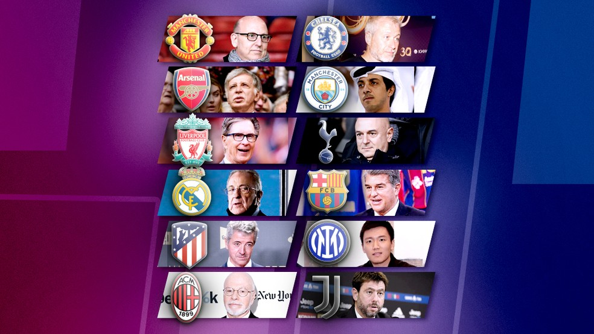
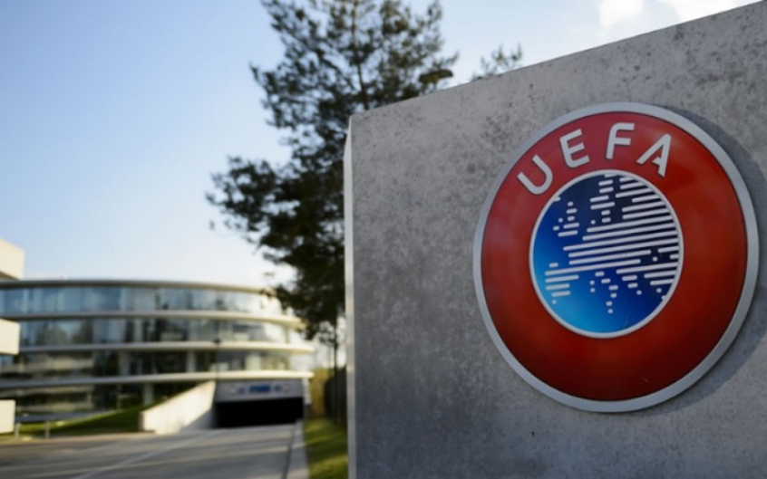

Veja quais são os clubes fundadores, formato da competição, posicionamento oficiais das ligas e federações e as possíveis punições
Doze times europeus causaram uma enorme polêmica no futebol mundial com a criação da Superliga Europeia. Os clubes resolveram criar uma competição contrária a Liga dos Campeões da UEFA(Champions League). Após dois dias, cinco clubes fundadores - Manchester United, Manchester City, Arsenal, Liverpool e Totteham - anunciaram a desistência de suas participações, por conta das críticas e pressão dos torcedores.
No início estes eram os 12 clubes anunciados formadores do campeonato:
A entidade soltou a informação que aguradava mais três clubes para completar o grupo de 15 fundadores. Porém, o clube Manchester City anunciou sua desistência após dois dias da criação da Superliga, logo depois mais quatro times ingleses também desistiram.
Participariam 20 clubes: Os 15 fundadores mais cinco que se clssificariam com base no rendimento da última temporada. A competição teria seu início em Agosto e final nos últimos dia de Maio, em um estádio neutro. Os 20 times seriam repartidos em dois grupos, dentro da mesma chave tendo jogo dentro e fora de casa, os jogos aconteceriam no meio da semana.
Os quatro melhores classificados de cada grupo se enfrentariam em um mata-mata, tendo também partidas dentro e fora de casa. A final do campeonato seria em um único jogo. A ideia é que as últimas fases sejam jogadas dentro de um mês.
A entidade alega que esse projeto trará muitos benefícios à longo prazo, proporcionará aos torcedores jogos mais interessantes, alimentando a paixão pelo esporte. Os representantes afirmam também que a competição "Vai proporcionar aos clubes um crescimento financeiro maior do que com a Liga dos Campeões." Ao total os times fundadores receberiam na primeira temporada 3,5 bilhões de Euros. Além disso, a Superliga Europeia diz que faria "contribuições para solidariedade" no valor de 10 bilhões de Euros.
Esses valores seriam muito superiores aos valores pagos pela UEFA nas suas respectivas competições (Liga dos Campeões, Liga Europa, Supercopa Europeia), essas competições ao todo geraram 3,2 bilhões de Euros em direitos de transmissão na temporada de 2018/2019, antes da pandemia ter afetado o sistema do mercado europeu de direitos esportivos.
Com a criação da Superliga, a UEFA e as ligas nacionais ameaçaram punir os clubes participantes da nova competição. A Superliga sustenta que os clubes não saíriam punidos e que poderiam atuar pelas seus campeonatos nacionais. Porém, o campeonato não foi bem aceito pelas grandes ligas da Espanha, Alemanha, França e Inglaterra, essas ligas prometem punir os times participantes.
Aqueles que estavam envolvidos na organização da Superliga, sofreram ameças de punições esportivas e judiciais por parte da confederação européia (UEFA). Essas punições envolvem o banimento dos clubes de competições domésticas e internacionais, também afetando os jogadores desses clubes, que não poderiam mais atuar pelas suas seleções.
